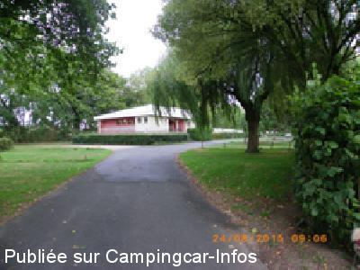
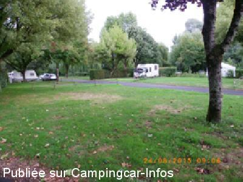
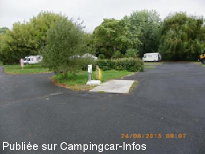
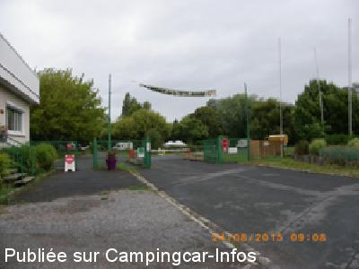

ACS = Aire de services sur camping acceptant le passage pour les services de :
BUZANÇAIS
(N° 596)
Accès/adresse :
Gué de la Bruère
Camping de la Tête Noire ***
36370 BUZANÇAIS
Camping de la Tête Noire ***
36370 BUZANÇAIS
Latitude : (Nord) 46.89337° Décimaux ou 46° 53′ 36′′
Longitude : (Est) 1.41771° Décimaux ou 1° 25′ 3′′
Tarif : 2015
Stop accueil : 11 €
Emplacement, 2 personnes, électricité : 15 €
Personne + 7 ans : 5 €
Électricité 16 A : 4 €
Animal : 1,60 €
Services C-C de passage : 3 €
Services :


Lave-linge
Jeux
Autres informations :
Ouvert du 28/04 au 02/11
132 emplacements
Tél + 33 (0)254 841 727
ou + 33 (0)668 226 359
campinglatetenoire@gmail.com
http://www.camping-latetenoire.fr/index.php/fr/

Le 29/08/2015 par eastwood

Le 29/08/2015 par eastwood

Le 29/08/2015 par eastwood

Le 29/08/2015 par eastwood
de
eastwood
le 29/08/2015 :
Camping près de l'eau (idéal pêcheurs) un petit peu loin du bourg cependant. Borne de vidange à l'intérieur du camping, gratuite pour les résidents. Bar du camping ouvert jusqu'à 22 h 00. Service pain/croissants le matin. Un petit bémol : sanitaires équipés de 3 lavabos, 3 douches, 3 WC (un peu juste ? ).
Camping près de l'eau (idéal pêcheurs) un petit peu loin du bourg cependant. Borne de vidange à l'intérieur du camping, gratuite pour les résidents. Bar du camping ouvert jusqu'à 22 h 00. Service pain/croissants le matin. Un petit bémol : sanitaires équipés de 3 lavabos, 3 douches, 3 WC (un peu juste ? ).
de
inconnu
le 31/08/2000 :
Aire nouvelle mais bien située dans l'entrée du camping et à proximité du centre ville.
Aire nouvelle mais bien située dans l'entrée du camping et à proximité du centre ville.